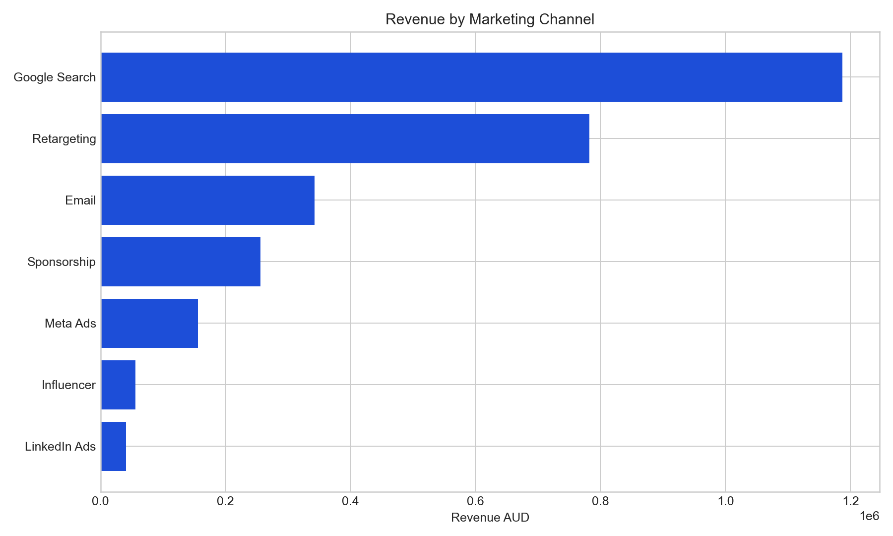
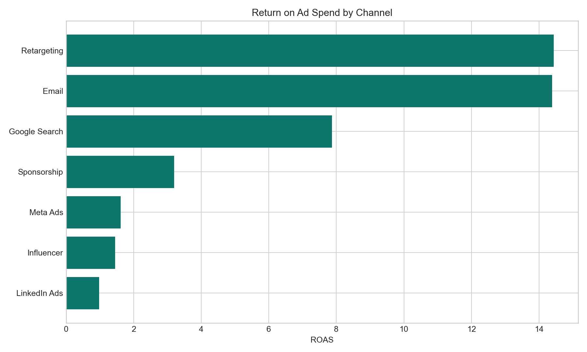
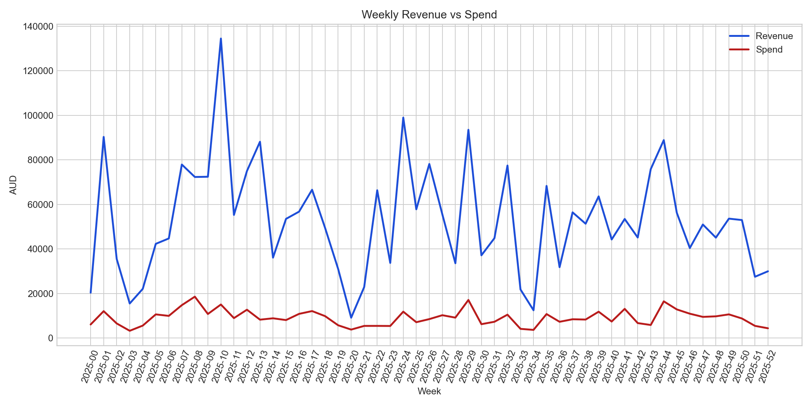
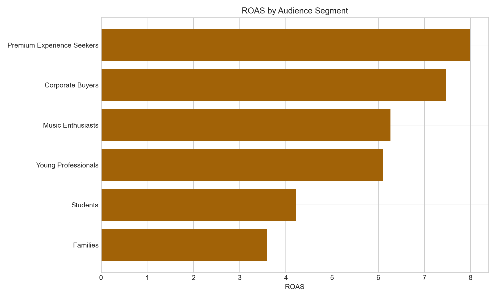

Best Channel
Retargeting
Best ROAS
14.44x
Top City
Melbourne
Best Scale Channel
Search
Revenue by Channel

ROAS by Channel

Weekly Revenue vs Spend

Audience Segment ROAS

Executive Recommendation
- Increase budget for retargeting, email, and Google Search because they show the strongest commercial efficiency.
- Use influencer and LinkedIn campaigns for awareness and audience creation, then convert that traffic using retargeting.
- Prioritize Melbourne, Bangalore, and Sydney for market-specific campaign playbooks.
- Build weekly management reporting around ROAS, CPA, conversion rate, revenue, and channel mix.